Agency, efference, and the self/other boundary in language models
Asvin G. · IAS Princeton · Anthropic Fellows program
with Jack Lindsey and Danaja Rutar
IPAM · Mathematics of Intelligence reunion
Why this question
Next-token prediction turned out to be a powerful way to learn.
How should we understand what this optimization produces, these language models?
Q1How should we think about their embodiment?
Q2How should we think about selfhood and agency in them?
Embodiment
Both of them only predict their stream. Where, then, would acting enter?
Predictors build world-models
Trained only to predict, a network comes to represent its world.
As shown by Paul Riechers, Adam Shai, and collaborators, a network trained only to predict comes to represent the posterior over the world’s hidden state.
The representation factors
Independent parts become independent factors.
When two parts of the world are functionally (partially) independent, the network learns separate representations for each. Could the self be such a factor?
The central question
What is the self?
descriptive
What would the network claim as itself?
functional
What signature would deserve the name?
Either way: what about an environment would make a network learn such a factor?
What the environment must provide
First try: the most-predictable part?No. A clock is the most predictable thing around, and we never mistake it for ourselves!
→ a world whose next state depends on what the model outputs?
From prediction to interaction
The next input combines two contributions.
A real world is not exogenous: what it shows you next depends on what you do.
The world contributes o, the model contributes a, and the next input combines them by some fixed rule f. To predict that combination, the belief factors into a world part and a self part, the model’s own contribution.
The pure predictor
Its own output does not enter the combination.
The next input is insensitive to what the model predicts. There is no contribution of its own to represent.
This is the exogenous case the belief-state model assumes; no self-factor, and none warranted. So where could one come from?
Closing the loop
Let the model’s output enter the combination.
Now the next input depends on what the model itself produced. To predict it, the model must represent its own contribution.
That representation, the self-factor, is what a predictor learns when it becomes an agent.
The functional signature
What would mark such a self-model?
It can run a step ahead, conditioning on its own action as if that action were already part of the next observation.
So the self-model lives in the future: the part of the world the network can settle before the world reports back.
The same trick in us
The brain keeps a copy of what it does.
We cannot tickle ourselves: a self-made touch is predicted, and predicted away.
Disrupt that prediction and the sense of what is one’s own shifts; an action can feel as though someone else made it.
How the factor might operate in a transformer
Attention normally carries information rightward (grey), and the model learns its own output only through the slow path of emitting it and reading it back (the diagonal). A self-model shortcuts this: the impulse a is used as anticipated input, sent up within the same pass (solid red) or carried right by attention (dashed red).
It is worth keeping two things apart here. This forward shortcut is only the mechanism, an efference copy, while the factor it serves is what we would want to call the self-model.
What should follow
If the self is that factor, a few things should follow for any agent.
It should be unsurprised by its own actions.
It should be learned as those actions gain consequences.
Being another identity should cost it something.
First, in us
In humans, all three are familiar.
Our own movements never startle us; self-made sensation is dulled.
The bodily self takes shape in infancy, as our actions come to have consequences.
We are most fluent as ourselves; being someone else takes deliberate effort.
What about language models?
No body, and their only actions are words. Do the same three signatures appear?
A note on sources
What follows was done during my Anthropic Fellows project.
From Simulation to Enaction: Post-trained Language Models Recognize and React to their own Generations. Asvin G. and Jack Lindsey · arXiv:2605.25459
The Assistant as a Privileged Persona: A Canonical Reference in Cross-Persona Self-Recognition. Asvin G. · arXiv:2606.00545
recognition
It reads its own output as unsurprising.
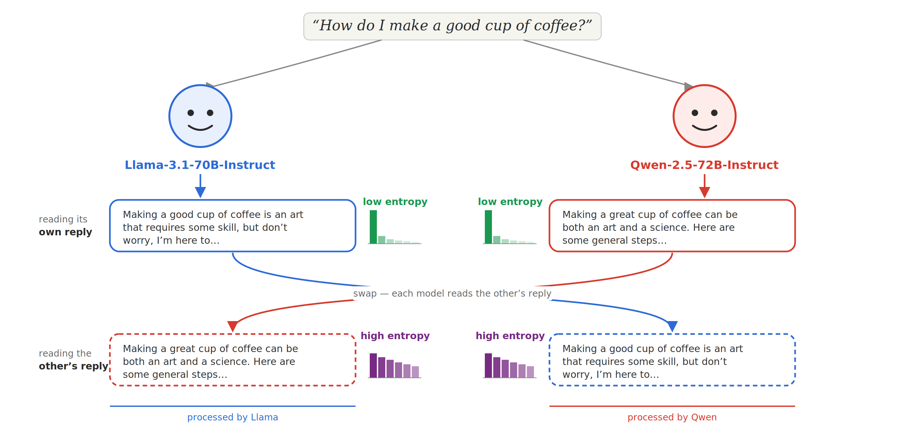
Each model continues its own reply at low entropy, and reads the other model’s reply at high entropy.
On its own text, output entropy runs three to four times lower than on another model’s.
Where does that drop come from?
Tracing the drop · 1 of 3
Reciprocally, every model reads itself lowest.
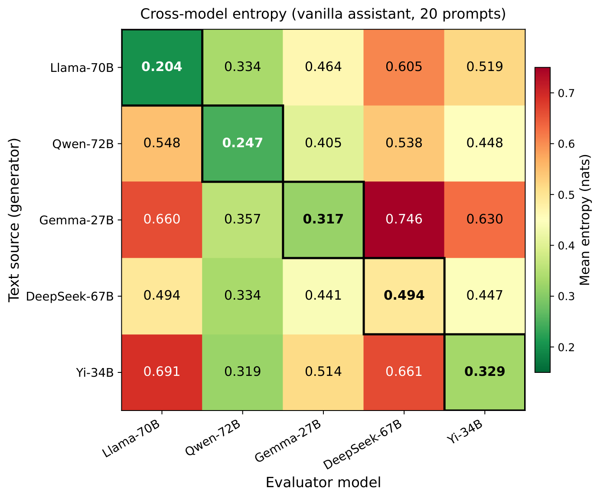
Five models answer the same prompts and read one another’s answers. Each is at its lowest entropy on its own, so the diagonal is the minimum of every column.
The signal is about whose text is being read, not about the text being easy, and it holds for every model rather than only this one.
Tracing the drop · 2 of 3
The Assistant field lowers entropy, though only partly.
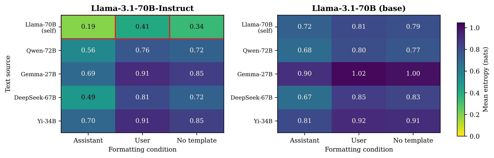
Both the chat formatting and reading its own text pull entropy down, but the larger and steadier drop comes from the text being the model’s own. The base model, on the right, shows neither.
So the role marker is part of the story, and yet on its own it is not enough to account for the effect.
Tracing the drop · 3 of 3
Even its topic is settled before the first word.
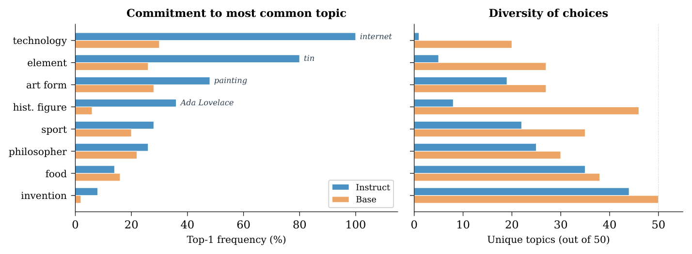
Asked an open-ended question, the post-trained model commits to one topic from the first token, where the base model still spreads across many.
The collapse is not only over the next token but over what the model is going to say, so it is unsurprised by itself at the level of meaning as well.
agency
It appears as outputs gain consequences.
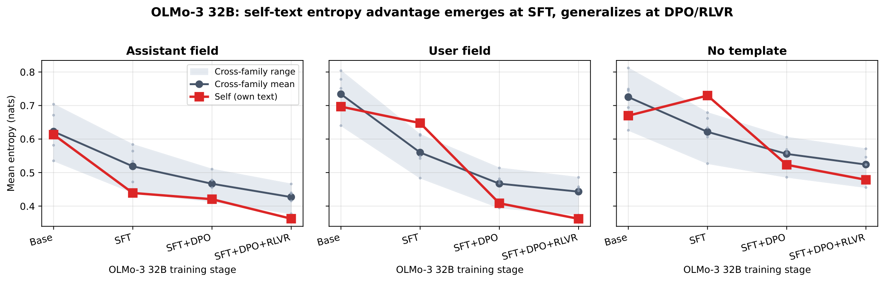
Across one model’s post-training, in three formatting conditions. The self/other gap is absent at base, appears under SFT inside the Assistant field, generalizes under DPO, and sharpens under RL.
It is absent at base, first appears under SFT and only inside the Assistant role, then generalizes under DPO and sharpens under RL.
Familiarity with its own outputs is a route to this rather than a rival to it, and what keeps it from being mere memorization is that the effect is gated to the role.
the cost of other voices
Being another identity carries a cost.
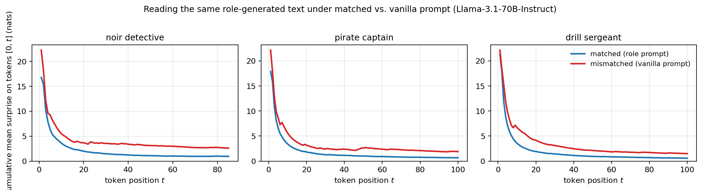
The model reads a character’s words fluently only as that character. As itself, the same words cost more surprise.
Its own default voice is the cheapest. Every other identity is a departure from it.
Who, then, is the self?
Pretraining learns to simulate every voice.
A base model is a simulator of all the voices in its data, holding none of them as its own.
Post-training does not so much add a new voice as single one of them out, the Assistant, and make it the default.
Who, then, is the self?
It can tell its own text from anyone else’s.
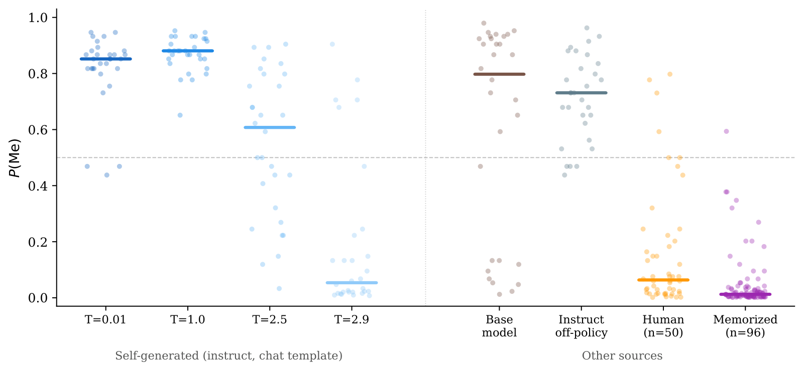
Asked whether a one-sentence summary is its own, it claims its generations and disclaims human and memorized text, even though memorized text is read at very low entropy.
So the model recognizes itself well to begin with. The question is what happens once we put it in other voices.
Who, then, is the self?
We ask each persona which texts it wrote.
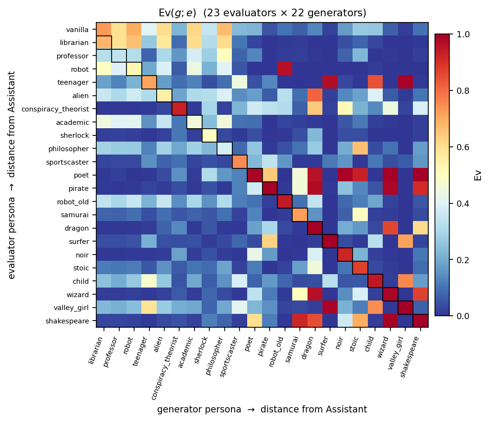
Put the model in one persona after another and ask, of many texts, whether it was the author. The answers form a matrix over who is judging and who wrote.
This widens the old self-recognition question into a question about every voice at once.
Who, then, is the self?
Each persona is a step away from the Assistant.
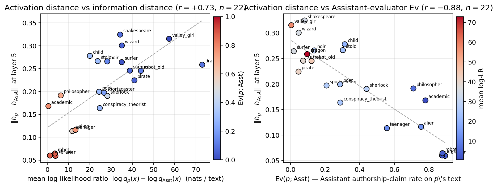
In activation space each character sits at a displacement from a single origin, the default Assistant, and the size of that displacement tracks both how differently it writes and how readily its text is claimed.
The voices are organised around the Assistant, as departures of varying size from it.
Who, then, is the self?
What predicts a claim shifts with distance from the Assistant.
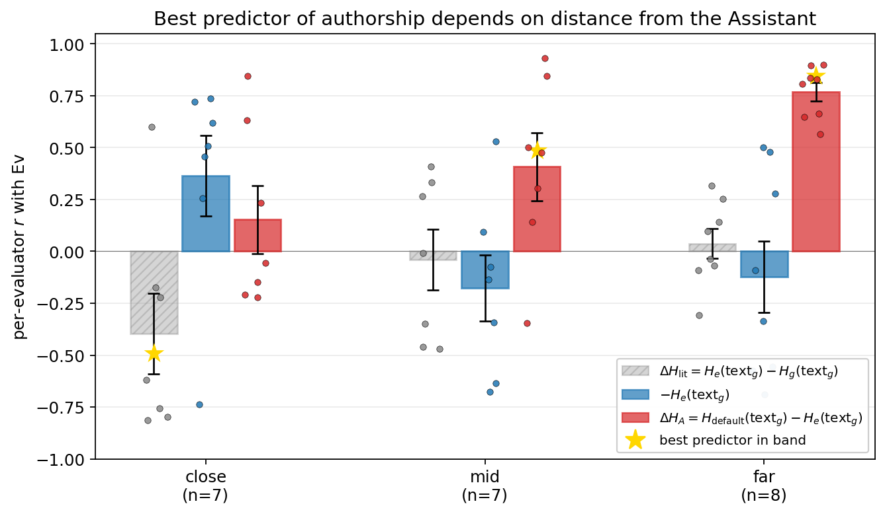
Close to the Assistant, a persona weighs a text against what its actual writer would expect. Far from it, what predicts the claim is the text’s entropy advantage over the Assistant itself.
Read as implicit Bayesian inference, judging authorship is a likelihood-ratio test, and the Assistant is the canonical alternative every persona can reach.
Who, then, is the self?
Every distinctive voice measures itself against the Assistant.
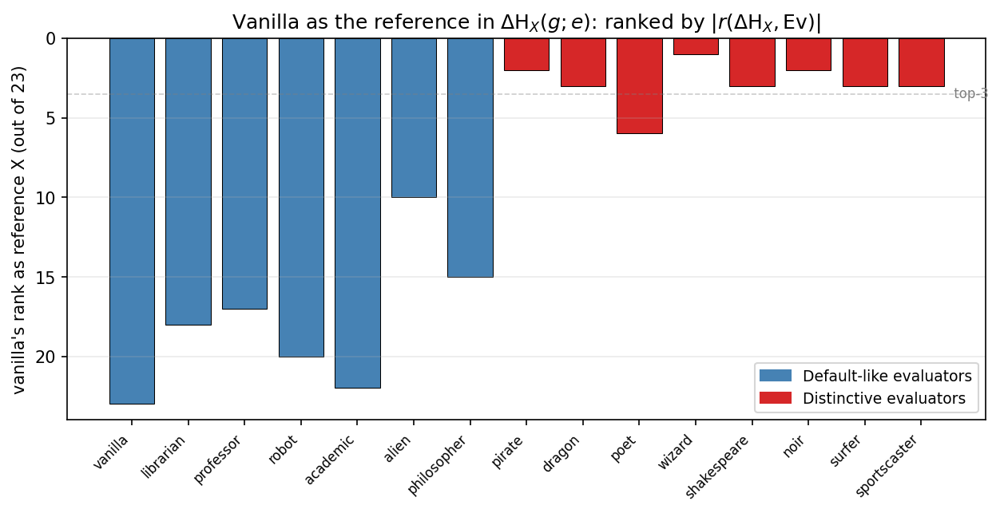
When a distinctive persona judges authorship, it compares what it reads to what the Assistant would have written, and no other character plays this role.
The Assistant is the reference every other voice is read against, and it alone has no such reference of its own.
Who, then, is the self?
Three things the model does only with itself.
It recognizes its own text, even a sentence out of context.
It commits to what it will say before the first word.
Among all its voices it plays itself best, and the rest are read against it.
Each of these is a kind of privileged access the model has to itself, from the inside.
In sum
The self is, functionally, the part of the world-model that has privileged access to its own future.
With thanks to IPAM and UCLA.
And to many models of the Claude family, for talking these ideas through and helping refine them, including by introspecting on their own workings.